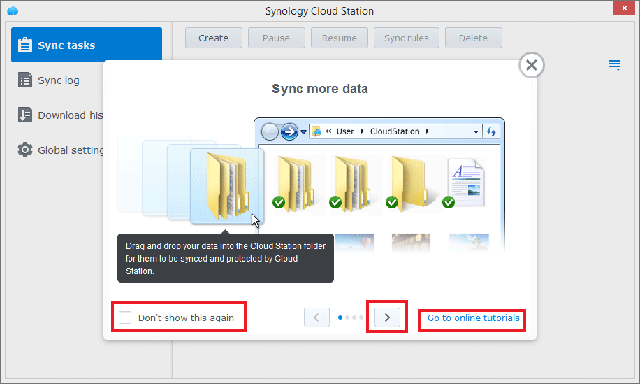
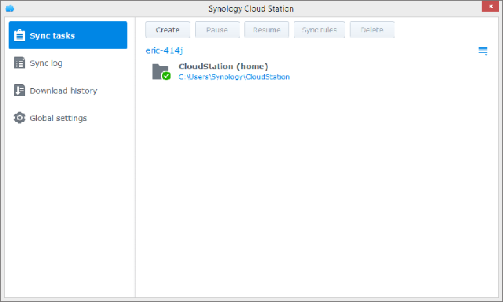

概述
eCore Server 的 Cloud Station 為一個同步檔案的應用程式，讓您可以在 eCore Server 及其他電腦或行動裝置 (須搭配 DS cloud) 之間輕鬆地同步檔案。 在您的 eCore Server 和本機電腦上分別安裝 Cloud Station 之後，儲存在電腦上指定資料夾內的檔案將會自動同步至您的 eCore Server。
1. 安裝 Cloud Station
- 前往套件中心來尋找 Cloud Station 並點一下安裝。

2. 啟動 Cloud Station
- 開啟 Cloud Station。
- 若您還未啟動使用者家目錄，系統會要求您先啟動該功能。 按一下確定。
- 您將會被重新導向至使用者設定頁面。 啟動使用者家目錄，然後按一下套用。
- 回到 Cloud Station，系統將會要求您先啟動此套件。 按一下是。
- 前往權限來指定哪些使用者可以使用 Cloud Station。 按一下儲存。


3. 安裝與啟動
- 前往 Cloud Station > 總覽，然後按一下電腦按鈕。
- 按一下按鈕來下載適用於您作業系統的 Cloud Station。 (亦可前往 Synology 下載中心進行下載。)
- 在電腦上開啟安裝程式，並依照指示。
- 安裝完成後，在電腦上執行 Cloud Station。 按一下立即開始。
- 輸入您的電腦名稱、執行 Cloud Station 的 eCore Server 位址 (或 QuickConnect ID)、使用者名稱及密碼。 您可以點一下右邊的搜尋圖示來尋找 LAN 裡的 IP。 按一下下一步。
- 選擇您想要如何建立任務（例如，快速設定）並點一下下一步。
- 點一下完成來完成設定。
- 點一下開啟資料夾來開啟您的 Cloud Station 資料夾。
- 您可以在您的系統匣找到 Cloud Station 圖示。
- 雙點擊 Cloud Station 圖示開啟系統匣選單。 您可以在這裡檢視檔案的進度及狀態。 點一下主應用程式來開啟 Cloud Station。
- 開啟後 Cloud Station 將會顯示使用小提示。 點一下右方的箭頭來參閱更多小提示，或點一下前往線上使用教學 以取得更多資訊。 若您不需要小提示，點一下不要再顯示此訊息 。 
- 現在您就能管理 Cloud Station 上的同步任務 。 


4. 同步資料到行動裝置
你可從 Apple App Store 及 Google Play Store 免費下載 DS cloud。 您也可以掃瞄下方 QR code 直接進行下載。